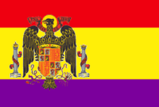

Segunda República Española
 De: La Frikipedia, la enciclopedia extremadamente seria.
De: La Frikipedia, la enciclopedia extremadamente seria.
| De la serie fenómenos sociológicos:
|
| Segunda República Española
|
| 
|
| La República hará que todos los españoles sean felices y tengan la tripa llena
|
|
| Fenómeno sociológico
|
Res Pública
|
| Principios
|
Café para todos
|
| Zona de origen
|
Grecia
|
| Consecuencias
|
Nadie elige al que manda
|
| Símbolos típicos
|
Bandera hortera y en vez de una corona de oro y joyas, una de ladrillos
|
| Frikismo
|
Máximo
|
| ¿Gusta a la gente normal?
|
Muxo, sobre todo a tu abuelo
|
| ¿Recomendable?
|
Si, excepto que seas hijo de papá, hijo de rey o familiar de rey
|
| Máximo exponente
|
Manel Fraga
|
La II República Española fue el sistema operativo que se puso en todos los ordenadores de España tras fracasar el sistema Windows Borbón I.
Etapas de la seghunda república española
Cuando Alfonso XIII ya no tuvo más chistes que contar a los españoles, estos lo echaron, y como tampoco había más generales que le echaran una mano se piró a Suiza dejando a España sin mandatarios, razón por la cual se arrejuntaron todos en palacio y votaron por hacer una República al estilo francés.
- Primera legislatura (1931-1933): las primeras votaciones las ganó el PSOE, pero al intentar hacer que España fuese un país capitalista los anarquistas, el ejército y los terratenientes les hicieron la revolución. Como fracasaron todos a la vez, fundaron un partido político.
- Segunda legislatura (1933-1936): El PP ganó las elecciones pero al intentar coaligarse con Falange Española los rojos intentaron sacarles el poder. Tras fracasar, fueron a las elecciones.
- Tercera legislatura (1936-1939): ganaron unos rojoburgueses, pero no se sabe muy bien cómo fue, porque a mediados de 1936 varios generales le dieron un golpe de estado.
Consecuencias de la seghunda república española
- Los fachas siempre dicen que fue muy mala para España.
- Los rojos siempre dicen que fue muy buena pa España.
- Los burgueses nunca le hicieron ascos, aunque prefieren a la Monarquía para que les dé algún título nobiliario.
- Los conservadores y nacionalistas periféricos siempre la han visto de refilón.
- Fue la primer oportunidad para que hubiese democracia en Espiña.
- Modernizó España al inventar los pantanos (que luego Iberia.
Frikipedia 2005-2016, Licencia
GFDL 1.2 - Extraído por FrikiLeaks